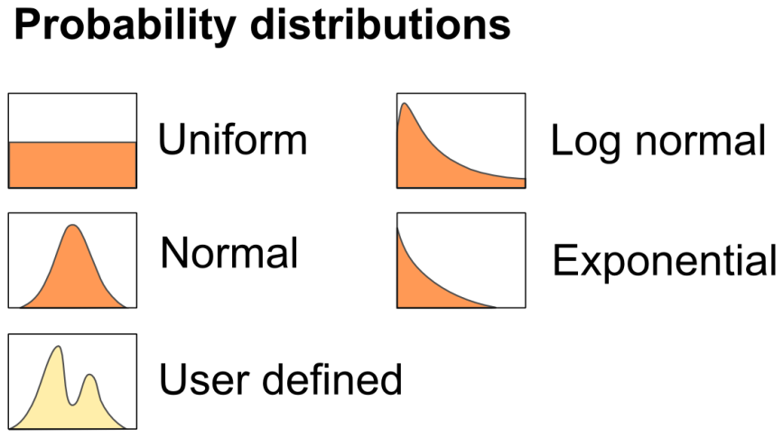
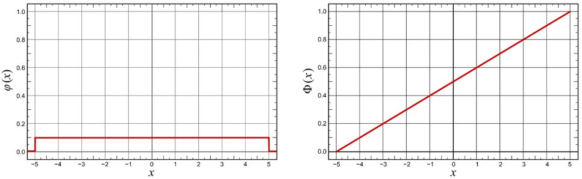
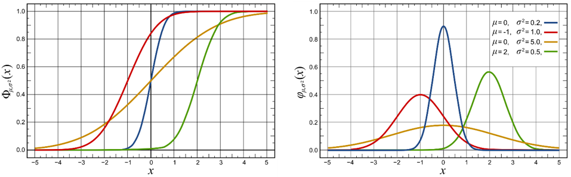
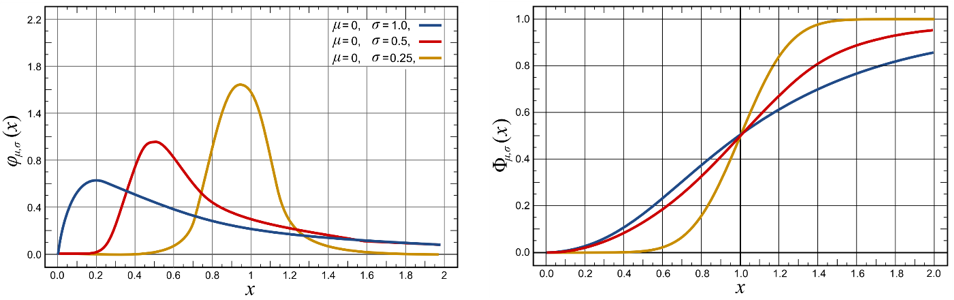
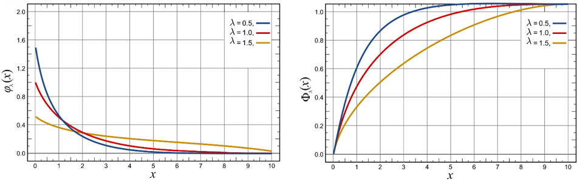
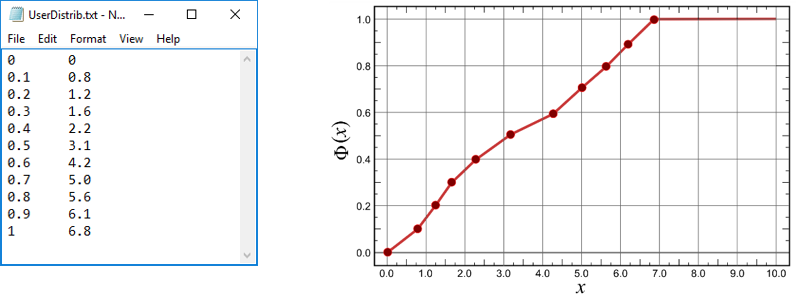

5 Expert module - Stochastic equations
5.1 Introduction to the stochastic simulation
The problem of identifiability is basic to all statistical methods and data analysis and it occurs in diverse areas such as reliability theory, survival analysis, econometrics, etc., where stochastic modelling is widely used (Prakasa, 1992).
The module Stochastic of the Expert frame has been implemented for launching multiple simulations depending of the object’s selected parameters. This module uses probability distributions to calculate the simulation parameters. The defaults results are two CSV files, one of them is a statistics series of all the simulations and the other is a parameter series with a selected distribution. The user can save all the simulation in a single file when the process is finished.
5.2 Probability distributions
A probability distribution assigns a probability to each measurable subset of the possible outcomes of a random experiment. The predefined distributions are uniform, normal, log normal, exponential and finally it is possible use a customized distribution (Figure 5.1).

For define a correct probability distribution, the area under the probability density function must be equal to 1. For other hand, cumulative distribution function is bounded between 0 and 1 and also it must be non-decreasing and right-continuous.
5.2.1 Uniform
The continuous uniform distribution or rectangular distribution is a family of symmetric probability distributions such that for each member of the family, all intervals of the same length on the distribution’s support are equally probable. Figure 5.2 shows an example with a bounded X between [-5, 5].

5.2.2 Normal
The normal distribution (or Gaussian distribution) is a very common continuous probability distribution. Normal distributions are important in statistics and are often used to represent distributions are not known. Several characterizations of the univariate and the multivariate normal distribution are known (Kagan et al., 1967; Prakasa, 1992) The normal distribution is sometimes informally called the bell curve. The following Figure 5.3 shows an example with a bounded X axis between [-5,5], where is more probable to find a X value.

Probability density function:
\[ \varphi = f(x\ |\ \mu,\ \sigma) = \frac{1}{\sigma\sqrt{2\pi}} \cdot e^{- \frac{(x - \mu)^{2}}{2\sigma^{2}}} \qquad(5.1)\]
with \(\mu\): mean or expectation of the distribution (and also its median and mode); \(\sigma^{2}\): variance; \(\sigma\): standard deviation.
Cumulative distribution function:
\[ \phi = f(x\ |\ \mu,\ \sigma) = \frac{1}{2}\cdot \Bigg( 1 + \frac{1}{\sqrt{\pi}}\int_{- \Big( \frac{x - \mu}{\sigma\sqrt{2}} \Big)}^{\Big( \frac{x - \mu}{\sigma\sqrt{2}} \Big)}e^{{- t}^{2}} \mathrm{d}t \Bigg) \qquad(5.2)\]
The normal distribution is useful because of the central limit theorem. In its most general form, under some conditions, it states that averages of random variables independently drawn from independent distributions converge in distribution to the normal, that is, become normally distributed when the number of random variables is sufficiently large.
5.2.3 Log normal
A log-normal distribution is a continuous probability distribution of a random variable whose logarithm is normally distributed. Consequently, if the random variable X is log-normally distributed, then Y = ln(X) has a normal distribution. Likewise, if Y has a normal distribution, then X = ey has a log-normal distribution. A random variable which is log-normally distributed takes only positive real values (Johnson et al., 1994). Figure 5.4 shows an example with a bounded X axis between [0, 2], where is more probable to find an X value.

Probability density function:
\[ \varphi = f(x\ |\ \mu,\ \sigma) = \frac{1}{x\sigma\sqrt{2\pi}}e^{- \frac{\left( \ln x - \mu \right)^{2}}{2\sigma^{2}}} \qquad(5.3)\]
with \(\mu\): mean or expectation of the distribution (and also its median and mode); \(\sigma^{2}\): variance; \(\sigma\) standard deviation.
Cumulative distribution function:
\[ \phi = f(x\ |\ \mu,\ \sigma) = \frac{1}{2}\left\lbrack 1 + \frac{1}{\sqrt{\pi}}\int_{- \left( \frac{\ln x - \mu}{\sigma\sqrt{2}} \right)}^{\left( \frac{\ln x - \mu}{\sigma\sqrt{2}} \right)}e^{{- t}^{2}}dt \right\rbrack \qquad(5.4)\]
A log-normal process is the statistical realization of the multiplicative product of many independent random variables, each of which is positive. This is justified by considering the central limit theorem in the log domain. The log-normal distribution is the maximum entropy probability distribution for a random variate X for which the mean and variance of ln(X) are specified (Park and Vera, 2009)
5.2.4 Exponential
The exponential distribution describes the time between events in a Poisson point process. Is a type of random mathematical object that consists of points randomly located on a mathematical space (Stoyan et al., 1995). It is a particular case of the gamma distribution. It is the continuous analogue of the geometric distribution, and it has the key property of being memoryless. Figure 5.5 shows an example with a bounded X axis between [0, 10], where is more probable to find an X value.

Probability density function:
\[ \varphi = f(x\ |\ \lambda) = \lambda e^{- \lambda x} \qquad(5.5)\]
with \(\lambda\): the parameter of the distribution, often called the rate parameter [λ>0].
Cumulative distribution function:
\[ \phi = f(x\ |\ \lambda) = 1 - e^{- \lambda x} \qquad(5.6)\]
5.2.5 User defined
For define a custom probability distribution, the user must create a text file with two columns (Figure 27, left). The first column is the cumulated probability and the second it is for the X value associated. The middle values are calculated with a linear interpolation method. Figure 5.6 right is the cumulative distribution for a user defined distribution.

Figure 5.7 shows the probability density function for the user defined distribution. As same to cumulative distribution, program calculate middle point through linear interpolation.